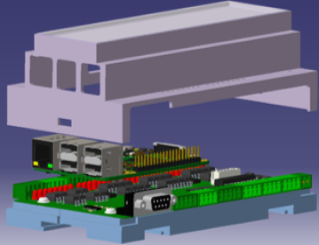
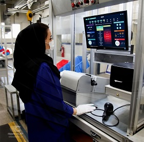

Reza is an Embedded Systems Software Engineer with over 7 years of experience in the
Automotive and Embedded Systems fields. He possesses proficiency in C/C++, Python,
Machine Vision, and Embedded Systems. Reza has gained substantial experience by actively
working in the automotive and IoT industries, making valuable contributions to diverse
projects. His expertise in Embedded Systems extends to various applications, including
machine vision and the development of function testers for End-of-Line testing of ECUs,
Infotainment systems, and other automotive components. Reza demonstrates a self-
motivated mindset, meticulous attention to detail, and a strong ability to work effectively both
independently and as part of a team. He is enthusiastic about sharing his best practices and
equally receptive to learning from others.
Projects
1. Column Switch Tester (Automotive)
In one of our projects in Crouse (Automotive Parts Supplier Company), we are engaged in the
development and design of a Column Switch Tester for the end-of-line (EOL) process. This Column Switch
Tester comprises three devices: the Viper Lever, Light Lever, and Assembled Lever. As a
member of our cross-functional team, my primary responsibilities include:
Developing C/C++ software for the embedded Linux system:
Developed C/C++ software for an embedded Linux system using Raspberry Pi.
Collaborated with hardware developers to create an expansion board for Raspberry Pi.
Implemented a custom Linux driver using SPI protocole to enable reading and writing of I/O from the expansion board.
Utilized cross-compilation with GCC for efficient software development.
Connected sensors, expansion board, and barcode reader in the backend.
Ensured high-speed performance for reading and writing I/O operations.
Developed a test algorithm based on the QC (Quality Control) requirements.
Established a connection to the SQL database for reading and writing the test results.
Implemented the calculation of Overall Equipment Effectiveness (OEE) for the tester line.
Developed algorithms and logic to accurately calculate OEE based on relevant metrics and data.
Incorporated OEE calculation into the software system to track and analyze the efficiency of the tester line.

Designed Expanssion BoardColumn Switch Panel
Designing and developing the user interface (UI):
Developed the user interface using cross-platform QML technology.
Designed and integrated an OEE (Overall Equipment Effectiveness) feature to measure the availability, performance, and accuracy of the device.
Provided a user interface that enables operators to monitor and analyze the test results effectively.
Designed a dedicated page in the user interface for hardware debugging and manual testing.
Provided clear instructions and visual cues to guide users through the debugging and manual testing process.
Included relevant controls, indicators, and feedback mechanisms to assist in hardware troubleshooting and validation.

Project Results:
Developed a customizable switch tester capable of testing various car models in Iran.
Provided a cost-effective solution for switch testing, resulting in improved efficiency and accuracy in the automotive industry.
2. Integrated security systems (IoT)
I am honored to present my project for SGI Company. This project consists of three key
elements: the fire alert system, access control, and video management system. I have
been given the opportunity to demonstrate my proficiency across three levels of
programming, including embedded system, backend development, and front end. This
comprehensive endeavor encompasses the following components:
Embedded System:
Used ARM STM32F103 microcontroller and FreeRTOS for reliable and efficient
system-to-network communication.
Backend Development:
Utilized Flask, Python, and MongoDB for seamless service provision.
Implemented four microservices: Auth, IOManagement, Cameras, and Storage.
Chose a suitable architecture using ZeroMQ for Service-Oriented Architecture
(SOA).
Implemented tokenization for secure client-microservices communication.
Emphasized code readability to enhance understanding and ease of
maintenance.
Enabled easy future enhancements and updates to the system.
Designed SOA for FireAlert
system
Frontend Development:
Implemented material design components using Qt QML for the user interface.
Followed the Flux architecture pattern for structured and organized
codebase.
Managed state and data flow within the application effectively.
Designed an intuitive and visually appealing frontend for an enhanced user
experience.
Utilized material design components for a modern and consistent UI look.


Let's Socialize